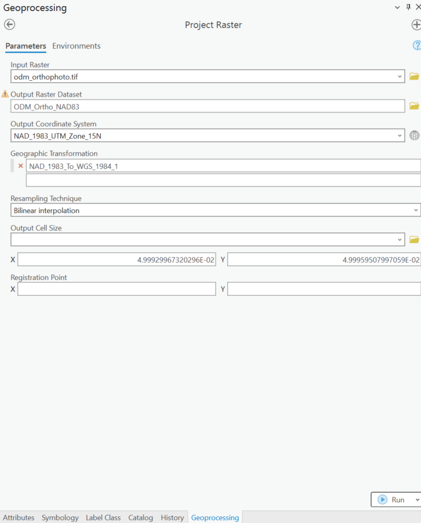
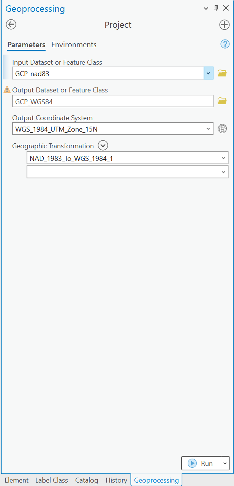
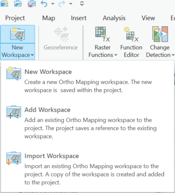
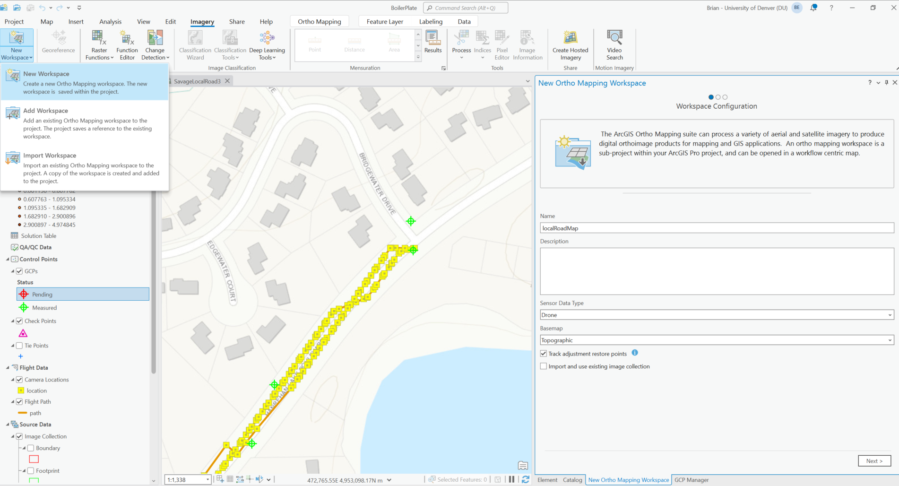
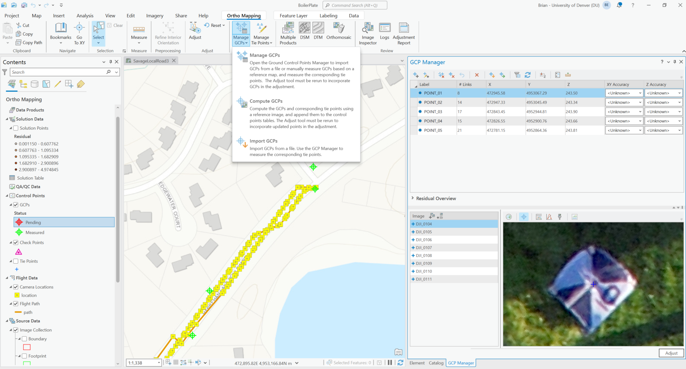

Published: Mon 19 May 2025
By Brian Estevez
In Drones .
tags: UAVs GIS Drones
Summary
This post was motivated by my experience using various Pix4D photogrammetry tools to process UAV imagery into 2D and 3D map products, including Pix4DMatic, Pix4DSurvey and Pix4DReact. While these tools offer excellent results, my experience testing other tools suggests that for non-survey grade applications you can achieve comparable results with far less cost. The compromise is the time needed to invest in these other tools. Having tested Pix4D in various settings, I was interested in exploring the capabilities of one particular open-source tool: OpenDroneMap (ODM). Although many are familiar with WebODM, the standalone ODM app offers a robust image processing pipeline that when directed to your folder of UAV photos will generate multiple outputs, including an orthomosaic, digital terrain model and quality report (example quality report is shown below).
Your browser does not support the video tag.
Here we walk through an example where we collected ground control points with a GNSS receiver, supplied those points to ODM and then converted the output to our local coordinate system in ArcGIS Pro. The final map shows the successful integration of the NAD83 converted orthomosaic map product with local data layers, including land Parcels.
Background:
There are multiple photogrammetry software dedicated to processing UAV imagery that are so accurate and detailed you can use them to make 3D models and 2D maps that help make decisions in the real-world. One of the best dedicated UAV imagery processing software is Pix4D. There are multiple Pix4D photogrammetry software targeted to different user groups, such as Pix4DReact for those in the emergency or disaster response field. If you have ever used one of these Pix4D software platforms to process your UAV images, then you already know: it provides a well thought-out visually intuitive experience, enabling you to produce high-quality results with relatively little effort. The flip-side is its high and continuous cost. Due to the additional tools and time needed, additional costs will be incurred if your final result requires survey-grade precision (e.g., mapping property boundaries, achieving some target or industry regulated level of absolute accuracy, such as at or below 1/10 of a foot (~3cm)). This level of absolute accuracy for UAV imagery typically requires the UAV project team to also collect ground control points at the site, for example, using a GNSS receiver that marks the locations of physical points in the real-world with centimeter-level GPS position corrections enabled. Feeding these GCPs into the photogrammetry software allows adjustment to the models initial georeferencing. The initial result is constructed exclusively from the photo metadata based on the UAVs onboard GPS and UAV orientation, yielding positional accuracy +/- several meters at best. The value of the average horizontal and vertical error between these fixed GCPs and their corresponding positions in the final georeferenced imagery determines whether or not the model has achieved the desired level of absolute accuracy for your application. Crucially, if your final result does not require at or below 3 centimeter-level absolute accuracy in georeferencing, GCPs are unnecessary and importantly, there are far less costly photogrammetry workflows.
Coordinate System Handling in OpenDroneMap (ODM) vs Pix4D
ODM's Default Coordinate System
Achieving precise georeferencing of images in photogrammetry requires some understanding of how the software handles coordinate reference systems. OpenDroneMap defaults to WGS84-based coordinate systems. This makes sense because most UAV imagery uses this global framework. WGS84 is an Earth-centered geodetic system. It is the standard used by the GPS network and is built into most navigational devices.
When you process the images with out GCPs ODM automatically chooses the correct WGS84-based UTM. If you are in Minnesota the data (orthomosaic, Digital Surface Model, Point Cloud) will be output in WGS84 UTM Zone 15N. Even if you supply GCPs in a different CS (e.g., NAD83), ODM reprojects them to WGS84. This 'one-size fits all' setting, ensures that every piece of data fed into ODM's photogrammetry processing pipeline (i.e., GCPs and UAV GPS data) resides in a common globally recognized spatial reference system.
Although having all data conform to WGS84 is useful for global data integration and navigation, many mapping projects require alignment with locally referenced datasets such as land parcel and infrastructure maps. These datasets are based on regional datums.
In North America, the North American Datum of 1983 (NAD83) is a common standard. NAD83 is specifically calibrates for North America, improving local georeferencing accuracy compared to the global WGS84 model. Small differences between WGS84 and NAD83 -about 1 meter or less- can have a big impact if you are integrating your UAV-based map with data that requires high spatial precision, such as land surveying or construction. So, after processing imagery in ODM, if your workflow requires alignment with locally referenced datasets, you need to reproject the output from WGS84 to NAD83. This can be done using tools such as ArcGIS Pro. This ensures your UAV-based map aligns correctly with local data layers.
Using Ground Control Points in ODM
You can supply ODM a GCP file called gcp_list.txt defining known points in your desired coordinate system. For example, if GCPs are surveyed in NAD83(2011)/ UTM Zone 15N you could start your gcp_list.txt file with its EPSG code in one line: 'EPSG:26915', and then the remaining lines are the x,y,z , corresponding x, y image pixel coordinates for the GCP centers, and file names. Populate a spreadsheet with this data for 4-5 photos per GCP and past it into a .txt file without headers. For example, if your project has 5 GCPs and 4 images per GCP, then your gcp_list.txt would have 21 total lines, including the first line specifying the projection of the GCP points. An example gcp_list.txt is shown below and you can download a template here: GCP_List . Note that you can can open up any application to find the img pixel coordinate where the GCP center position appears in each photo. Although, this is a time-consuming process, identification of the images containing GCP images can be automated in ArcGIS Pro, as discussed further below.
EPSG:26915
472946.1849
4953066.3993
243.503
1196
182
DJI_0104.JPG
POINT_01
472946.1849
4953066.3993
243.503
811
936
DJI_0105.JPG
POINT_01
472946.1849
4953066.3993
243.503
758
1561
DJI_0106.JPG
POINT_01
472946.1849
4953066.3993
243.503
736
1784
DJI_0107.JPG
POINT_01
472946.1849
4953066.3993
243.503
4750
1849
DJI_0108.JPG
POINT_01
472947.9361
4953044.6062
243.335
3301
200
DJI_0099.JPG
POINT_02
472947.9361
4953044.6062
243.335
3296
274
DJI_0100.JPG
POINT_02
472947.9361
4953044.6062
243.335
3318
466
DJI_0101.JPG
POINT_02
472947.9361
4953044.6062
243.335
3333
1009
DJI_0102.JPG
POINT_02
472947.9361
4953044.6062
243.335
3336
1285
DJI_0103.JPG
POINT_02
472844.0615
4952943.9231
243.896
2219
200
DJI_0055.JPG
POINT_03
472844.0615
4952943.9231
243.896
2218
279
DJI_0056.JPG
POINT_03
472844.0615
4952943.9231
243.896
2205
445
DJI_0057.JPG
POINT_03
472844.0615
4952943.9231
243.896
2215
961
DJI_0058.JPG
POINT_03
472844.0615
4952943.9231
243.896
2222
1315
DJI_0059.JPG
POINT_03
472827.1579
4952899.8729
243.66
3340
401
DJI_0041.JPG
POINT_04
472827.1579
4952899.8729
243.66
3338
425
DJI_0042.JPG
POINT_04
472827.1579
4952899.8729
243.66
3356
682
DJI_0043.JPG
POINT_04
472827.1579
4952899.8729
243.66
3359
1265
DJI_0044.JPG
POINT_04
472827.1579
4952899.8729
243.66
3363
1489
DJI_0045.JPG
POINT_04
472781.7621
4952863.4733
243.814
2489
1451
DJI_0016.JPG
POINT_05
472781.7621
4952863.4733
243.814
2554
1724
DJI_0017.JPG
POINT_05
472781.7621
4952863.4733
243.814
2544
1877
DJI_0018.JPG
POINT_05
472781.7621
4952863.4733
243.814
2568
2439
DJI_0019.JPG
POINT_05
472781.7621
4952863.4733
243.814
2585
2710
DJI_0020.JPG
POINT_05
ODM will automatically reproject all GCPs to the closest WGS84 UTM coordinate system of your data collection site to georeference your image data. This means that even with NAD83 or local GCPs, ODMs outputs will come out referenced to WGS84. This is an important limitation of ODM. In contrast, Pix4D that will automatically convert all outputs to the user specified coordinate system. So, if your goal is to produce maps or elevation models in non-WGS84 datum (e.g., NAD83), you need to reproject the outputs afterward. Alternatively, you can convert your GCPs to WGS84 and the corresponding UTM [2] . Essentially, ODM uses your GCPs to anchor the model to the correct place in the real world but the coordinate system reference frame of the outputs will be WGS84.
Installing and Running ODM on Windows
Your browser does not support the video tag.
If you are new to ODM or interested in running it locally using the Windows Command line version as was done here. Visit the GitHub repository to read up on the general information. Then download the Windows executable (application) here:OpenDroneMap Windows Installation
After completing the installation, navigate to the folder where ODM program was installed and modify the following command to run image processing:
run "C:\Users\beste\Desktop\DroneData\LocalRoadway4" --gcp "C:\Users\beste\Desktop\DroneData\LocalRoadway4\images\gcp_list.txt" --orthophoto-resolution 2 --dtm --dsm
Notice how the GCP file exists withing the images folder. Also, notice that the images exist within the LocalRoadway4 folder but we do not specify that folder in the path.
The general structure of the command line argument is :
run C:\Users\youruser\datasets\project [--additional --parameters --here]
For more Details on manually constructing Ground Control Inputs for ODM Continue Reading Below
Converting WGS84 outputs from ODM using ArcGIS Pro
As most UAV map products require integration into a locally referenced coordinate system for precise spatial alignment with other datasets, we need to transform those WGS84 outputs to the correct CS for our region. Here we handle the conversion of the ODM outputs in ArcGIS Pro. This enables us to view the result of converting the orthophoto and compare to the original output. We use the Project Raster tool for the orthophoto CS conversion, choose the output CS, and specify a Geographic Transformation. Note: NAD83 correct transformation from ODM WGS84 requires choosing this geographic transformation: NAD_1983_To_WGS_1984_1. ArcGIS Pro understands that we desire to go from NAD84 to WGS84.


For reference, it is helpful to include your GCPs before and after the same CS conversion. Successful transformation to the local CS can be visually confirmed by comparing the converted orthophoto with the positions of the original (NAD83-based) and converted WGS84 GCPs .
Your browser does not support the video tag.
Identifying the photos where GCPs Exist using ArcGIS Pro Ortho Mapping Workspaces
One of the most time-consuming steps can be finding the photos where GCPs exist. Like other photogrammetry software, Pix4D can automatically detect which images in your project contain GCPs, if you supply it with a spreadsheet of GCP coordinates.
ArcGIS Pro is also capable generating orthomosaics, and more relevant here, of identifying which photos contain GCPs. In ArcGIS Pro, you would select Imagery in top Ribbon and choose New Workspace.

Then will be guided with choices, including to point ArcGIS Pro to the folder containing your images, which should also contain your GCPs. Keep the coordinate system the same as the initial GCP inputs into ODM (i.e.,NAD84). Then drag and drop the spreadsheet file into your contents pane. After the project is loaded you should see an Ortho Mapping tab appear.

Select Manage GCPs. Your GCPs should appear here. After selecting one row in the GCP table all associated images where that GCP appears will appear below that table along with a thumbnail for the currently selected image.

This list of file names is what you need to create your gcp_list.txt for ODM. Essentially, in a spreadsheet you manually copy and paste your initial GCPs list to create 4-5 new rows with the same data per GCP. Then you copy over the distinct file names where those GCP appear for each row into that same spreadsheet.
Extract the pixel coordinates of the GCP Centers
Now that you have your images of interest you will need the GCP center as x and y pixel coordinates. This can be done manually by opening each file in something as simple as Microsoft Paint (Windows), hover over the GCP centers, and jot down the pixel coordinates for each photo in the correct row of your spreadsheet. Repeat for all 20-25 images. Now the gcp_list spreadsheet is complete. Paste everything into NotePad, except the headers, and save the file as gcp_list.txt within your images folder. If you have ODM installed, run ODM with it pointed to this file and your images folder, as described above, and it will process all your images into an orthomosaic with adjustments to the georeferencing of your model to account for these points.
Custom Python application with GUI to guide extraction of GCP pixel coordinates
If you have followed up to this point -thank you for your patience. You might be thinking, 'OK, this is fine, but how do I get the pixel coordinates now that I have all these files from ArcGIS Pro where my GCPs appear?' As mentioned earlier, you have the option to open your UAV photos with GCPs in any program that displays the image pixel coordinates as you hover over the image. Microsoft Paint is the simplest application I can think of that does this and is free. I would not recommend this approach because while we are trying to save on cost, having to go through 20 or more images in MS Paint and record those coordinates is brutally tedious and an error-prone approach.
Instead I built a simple python application with a GUI that will allow you to open and view photos in your folder of UAV images. Use this app to pan, and zoom to the GCP centers. You then click on them to mark the position and repeat for all images. The GUI has specific keyboard commands to navigate to the next image and save the output. This app will save all the GCP pixel coordinates in a csv file with their corresponding file name. This is exactly what you need to feed ODM along with their real-world coordinates. Now you have built final gcp.txt file for ODM to reference during image processing as shown in the command above.
Your browser does not support the video tag.
run "C:\Users\beste\Desktop\DroneData\LocalRoadway4" --gcp "C:\Users\beste\Desktop\DroneData\LocalRoadway4\images\gcp_list.txt" --orthophoto-resolution 2 --dtm --dsm
Sources